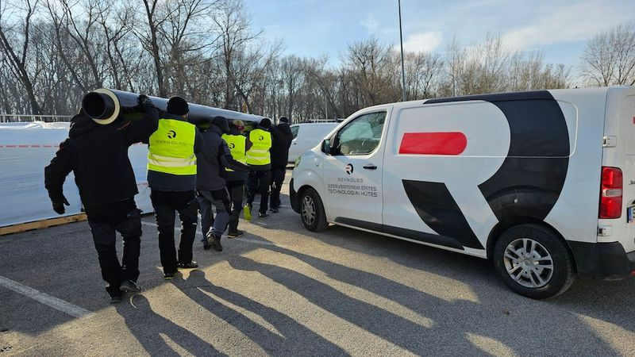

Szolgáltatásaink
- Szaktanácsadás
- Tervezés
- Projektvezetés
- Kivitelezés
- Gyors kiszállítás
- Minőségi termékek
- Megbízható szolgáltatás
- Kedvező árak
Szaktanácsadás
Sok esetben kapunk olyan megkereséseket amelyek olyan ügyfelektől érkeznek akik nem feltétlen rendelkeznek szaktudással IT hűtés vagy egyéb infrastruktúrák területén. Ez túlnyomó részt generál kivitelezők vagy beruházók esetén van így. Ilyen esetben igyekszünk szakmai tanácsokkal javaslatokkal támogatni ügyfeleinket, hogy a lehető legjobb alternatívát tudjuk kínálni a felmerülő igényekre. Természetesen szakmailag felkészült ügyfeleinknek is tudunk újdonságokkal szolgálni új trendek és innovatív műszaki megoldások ismertetésével. Az általunk kínált rendszerek éves üzemi prognosztizációjával és légállapotok modellezésével segítjük döntéshelyzetbe juttatni partnereinket.
Tervezés
A tervezési fázis minden beruházás fontos alapja. Ebben a fázisban történik meg különféle rendszerek összehasonlítása és az optimális megoldás kiválasztása a felsorakoztatott alternatívák közül. Az adatközpontokat és szervertermeket kiszolgáló infrastruktúrák tervezése komplex látásmódot és speciális szakmai tudást igénylő feladat. Az általunk lefedett szakágak mindegyikében komplett szakági tervezést nyújtunk. Illetve természetesen ezeket összefogva generál tervezést is kínálunk mely esetén biztosítjuk az általunk lefedett szakágak komplex és egymással tökéletesen összehangolt integrációját.
Projektvezetés
Az általunk értékesített berendezések, szolgáltatások első osztályú minőségét támogatjuk projektvezetéssel is. Meglévő vagy új ügyfeleink számára kínáljuk szakmai tudásunkat és a majd 250 elvégzett projektünk során megszerzett tapasztalatunkat mely garancia a minőségre. Projektjeink túlnyomó részét szervertermi és ipari környezetben vittük sikerre ami az átlagosnál magasabb követelményeket görgetett csapatunk elé. Ezek ma már nem akadályok hanem kihívás számunkra melyet örömmel vállalunk. Tegyen próbára minket egy kötetlen beszélgetés vagy egy szakmai konzultáció alkalmával, nem fog csalódni.
Kivitelezés
Az elektromágneses zavarforrások szinte mindenhol megtalálhatók ez elleni védelem a célunk. Széles frekvenciatartományban, igényeknek megfelelően (50Hz-5GHz) biztosítjuk a védelmet. A hazai piacon jelenleg is a legjobb minőséget adjuk a pontos, precíz munkánkkal, kollégáink neve ismerős a szakmában.
Cégünk fő tevékenységei szervertermek, MRI, ultrahangos orvosi kezelők, transzformátor helységek, moduláris és hagyományos mérőlaborok, lehallgatás mentes tárgyalók alacsony és magas frekvenciás EMC védelmének tervezéstől a kivitelezésig való megvalósítása.
Melléktevékenységként foglalkozunk árnyékolt szövet, EMC védett ajtó, hálózati és gyengeáramú szűrők forgalmazásával, gyártásával, illetve minősítésével.
Munkáink megfelelőségét mérési jegyzőkönyvvel igazoljuk.
Elsősorban az általunk forgalmazott berendezéseket szállítjuk kivitelezéses projektjeinkre de megrendelői igény esetén természetesen más gyártói termékek telepítését is elvégezzük.